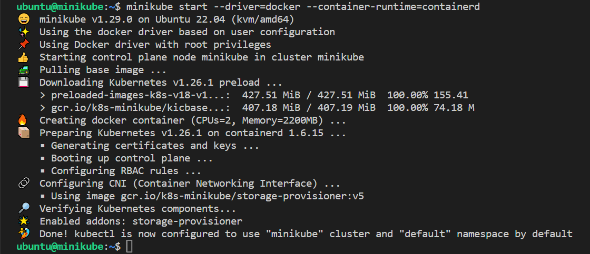
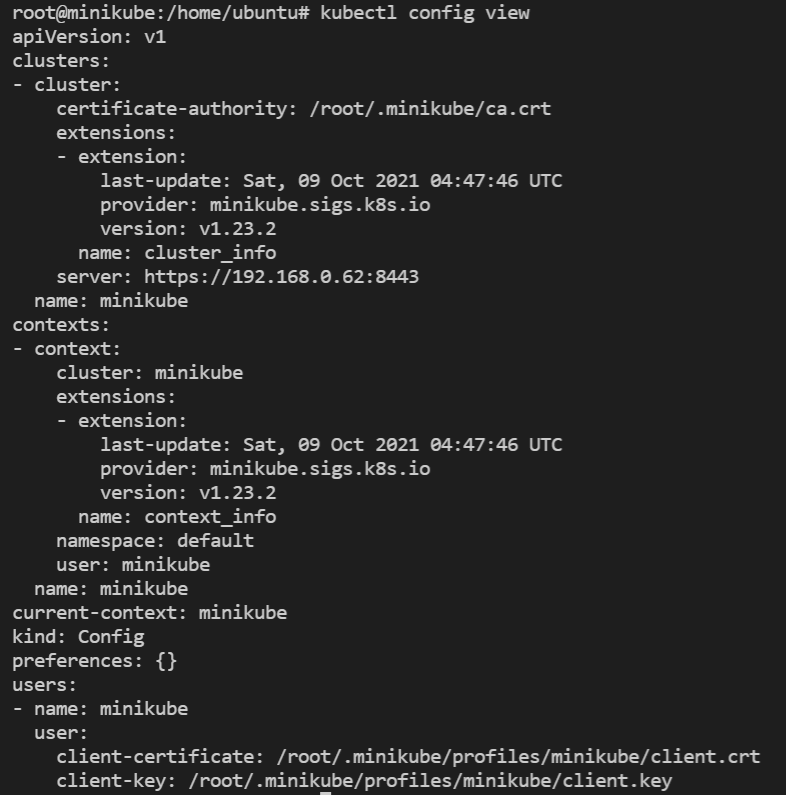
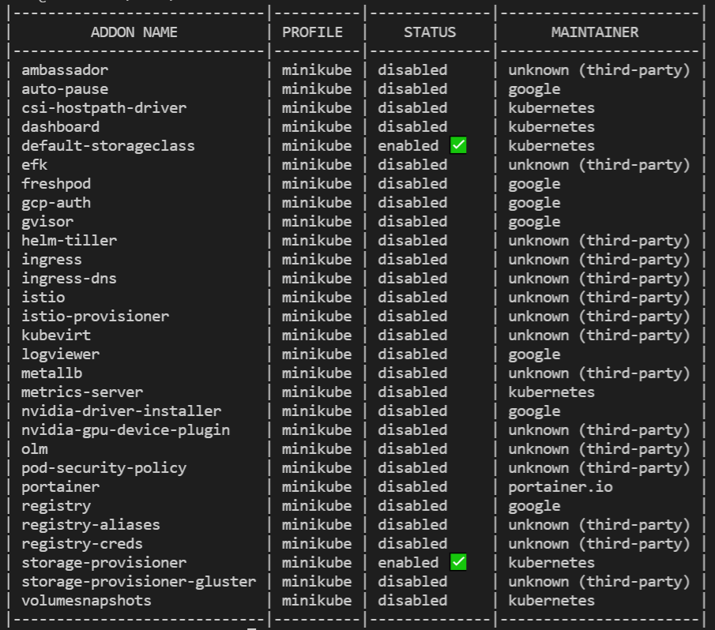
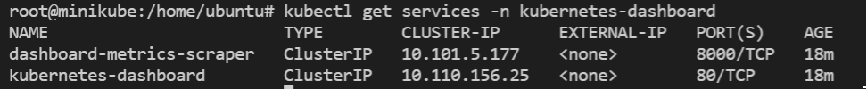
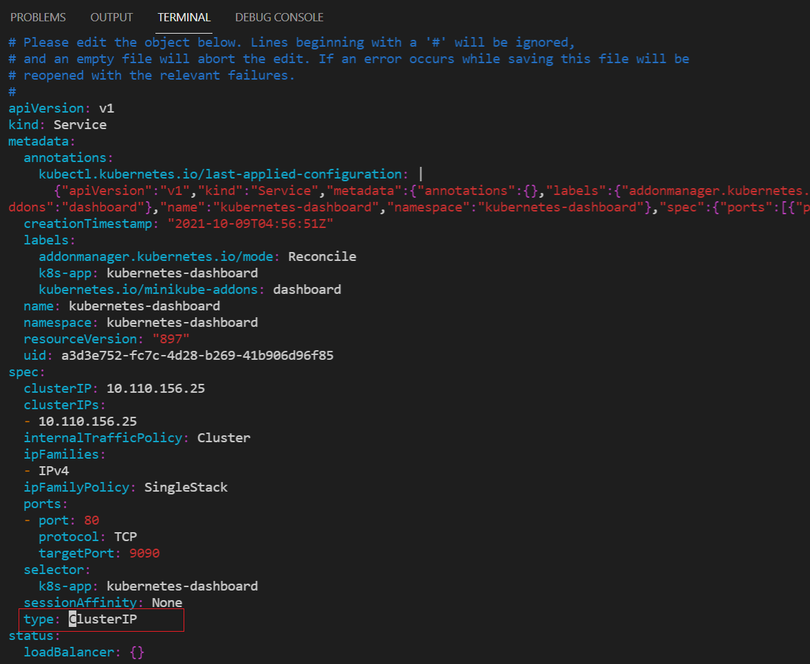
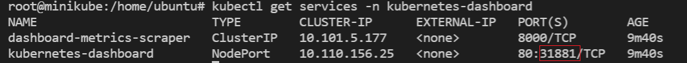
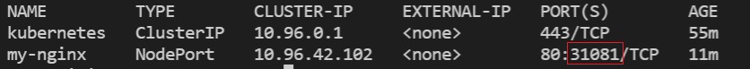
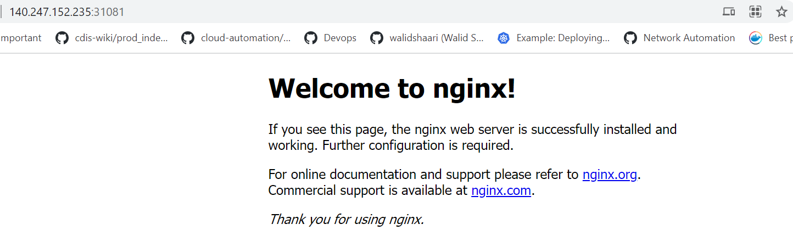
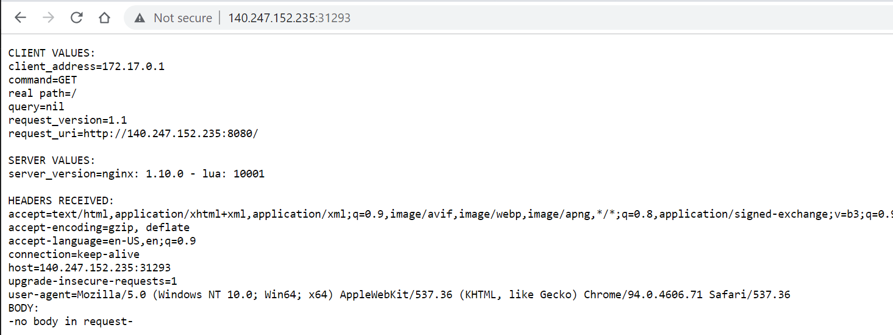

Minikube
Minimum system requirements for minikube
- 2 GB RAM or more
- 2 CPU / vCPUs or more
- 20 GB free hard disk space or more
- Docker / Virtual Machine Manager – KVM & VirtualBox. Docker, Hyperkit, Hyper-V, KVM, Parallels, Podman, VirtualBox, or VMWare are examples of container or virtual machine managers.
Pre-requisite
We will need 1 VM to create a single node kubernetes cluster using minikube.
We are using following setting for this purpose:
-
1 Linux machine for master,
ubuntu-22.04-x86_64or your choice of Ubuntu OS image,cpu-su.2flavor with 2vCPU, 8GB RAM, 20GB storage - also assign Floating IP to this VM. -
setup Unique hostname to the machine using the following command:
echo "<node_internal_IP> <host_name>" >> /etc/hosts hostnamectl set-hostname <host_name>For example:
echo "192.168.0.62 minikube" >> /etc/hosts hostnamectl set-hostname minikube
Install Minikube on Ubuntu
Run the below command on the Ubuntu VM:
Very Important
Run the following steps as non-root user i.e. ubuntu.
-
SSH into minikube machine
-
Update the repositories and packages:
sudo apt-get update && sudo apt-get upgrade -y -
Install
curl,wget, andapt-transport-httpssudo apt-get update && sudo apt-get install -y curl wget apt-transport-https
Download and install the latest version of Docker CE
-
Download and install Docker CE:
curl -fsSL https://get.docker.com -o get-docker.sh sudo sh get-docker.sh -
Configure the Docker daemon:
sudo usermod -aG docker $USER && newgrp docker
Install kubectl
-
Install kubectl binary
• kubectl: the command line util to talk to your cluster.
sudo snap install kubectl --classicThis outputs:
kubectl 1.26.1 from Canonical✓ installed -
Now verify the kubectl version:
sudo kubectl version -o yaml
Install the container runtime i.e. containerd on master and worker nodes
To run containers in Pods, Kubernetes uses a container runtime.
By default, Kubernetes uses the Container Runtime Interface (CRI) to interface with your chosen container runtime.
-
Install container runtime - containerd
The first thing to do is configure the persistent loading of the necessary
containerdmodules. This forwarding IPv4 and letting iptables see bridged trafficis is done with the following command:cat <<EOF | sudo tee /etc/modules-load.d/k8s.conf overlay br_netfilter EOF sudo modprobe overlay sudo modprobe br_netfilter -
Ensure
net.bridge.bridge-nf-call-iptablesis set to1in your sysctl config:# sysctl params required by setup, params persist across reboots cat <<EOF | sudo tee /etc/sysctl.d/k8s.conf net.bridge.bridge-nf-call-iptables = 1 net.bridge.bridge-nf-call-ip6tables = 1 net.ipv4.ip_forward = 1 EOF -
Apply sysctl params without reboot:
sudo sysctl --system -
Install the necessary dependencies with:
sudo apt install -y curl gnupg2 software-properties-common apt-transport-https ca-certificates -
The
containerd.iopackages in DEB and RPM formats are distributed by Docker. Add the required GPG key with:curl -fsSL https://download.docker.com/linux/ubuntu/gpg | sudo apt-key add - sudo add-apt-repository "deb [arch=amd64] https://download.docker.com/linux/ubuntu $(lsb_release -cs) stable"It's now time to Install and configure containerd:
sudo apt update -y sudo apt install -y containerd.io containerd config default | sudo tee /etc/containerd/config.toml # Reload the systemd daemon with sudo systemctl daemon-reload # Start containerd sudo systemctl restart containerd sudo systemctl enable --now containerdYou can verify
containerdis running with the command:sudo systemctl status containerd
Installing minikube
-
Install minikube
curl -LO https://storage.googleapis.com/minikube/releases/latest/minikube_latest_amd64.deb sudo dpkg -i minikube_latest_amd64.debOR, install minikube using
wget:wget https://storage.googleapis.com/minikube/releases/latest/minikube-linux-amd64 cp minikube-linux-amd64 /usr/bin/minikube chmod +x /usr/bin/minikube -
Verify the Minikube installation:
minikube version minikube version: v1.29.0 commit: ddac20b4b34a9c8c857fc602203b6ba2679794d3 -
Install conntrack: Kubernetes 1.26.1 requires conntrack to be installed in root's path:
sudo apt-get install -y conntrack -
Start minikube: As we are already stated in the beginning that we would be using docker as base for minikue, so start the minikube with the docker driver,
minikube start --driver=docker --container-runtime=containerdNote
- To check the internal IP, run the
minikube ipcommand. - By default, Minikube uses the driver most relevant to the host OS. To
use a different driver, set the
--driverflag inminikube start. For example, to use others or none instead of Docker, runminikube start --driver=none. To persistent configuration so that you to run minikube start without explicitly passing i.e. in global scope the--vm-driver dockerflag each time, run:minikube config set vm-driver docker. - Other start options:
minikube start --force --driver=docker --network-plugin=cni --container-runtime=containerd - In case you want to start minikube with customize resources and want installer
to automatically select the driver then you can run following command,
minikube start --addons=ingress --cpus=2 --cni=flannel --install-addons=true --kubernetes-version=stable --memory=6g
Output would like below:

Perfect, above confirms that minikube cluster has been configured and started successfully.
- To check the internal IP, run the
-
Run below minikube command to check status:
minikube status minikube type: Control Plane host: Running kubelet: Running apiserver: Running kubeconfig: Configured -
Run following kubectl command to verify the cluster info and node status:
kubectl cluster-info Kubernetes control plane is running at https://192.168.0.62:8443 CoreDNS is running at https://192.168.0.62:8443/api/v1/namespaces/kube-system/services/kube-dns:dns/proxy To further debug and diagnose cluster problems, use 'kubectl cluster-info dump'.kubectl get nodes NAME STATUS ROLES AGE VERSION minikube Ready control-plane,master 5m v1.26.1 -
To see the kubectl configuration use the command:
kubectl config viewThe output looks like:

-
Get minikube addon details:
minikube addons listThe output will display like below:

If you wish to enable any addons run the below minikube command,
minikube addons enable <addon-name> -
Enable minikube dashboard addon:
minikube dashboard 🔌 Enabling dashboard ... ▪ Using image kubernetesui/metrics-scraper:v1.0.7 ▪ Using image kubernetesui/dashboard:v2.3.1 🤔 Verifying dashboard health ... 🚀 Launching proxy ... 🤔 Verifying proxy health ... http://127.0.0.1:40783/api/v1/namespaces/kubernetes-dashboard/services/http:kubernetes-dashboard:/proxy/ -
To view minikube dashboard url:
minikube dashboard --url 🤔 Verifying dashboard health ... 🚀 Launching proxy ... 🤔 Verifying proxy health ... http://127.0.0.1:42669/api/v1/namespaces/kubernetes-dashboard/services/http:kubernetes-dashboard:/proxy/ -
Expose Dashboard on NodePort instead of ClusterIP:
-- Check the current port for
kubernetes-dashboard:kubectl get services -n kubernetes-dashboardThe output looks like below:

kubectl edit service kubernetes-dashboard -n kubernetes-dashboard-- Replace type: "ClusterIP" to "NodePort":

-- After saving the file: Test again:
kubectl get services -n kubernetes-dashboardNow the output should look like below:

So, now you can browser the K8s Dashboard, visit
http://<Floating-IP>:<NodePort>i.e. http://140.247.152.235:31881 to view the Dashboard.
Deploy A Sample Nginx Application
-
Create a deployment, in this case Nginx:
A Kubernetes Pod is a group of one or more Containers, tied together for the purposes of administration and networking. The Pod in this tutorial has only one Container. A Kubernetes Deployment checks on the health of your Pod and restarts the Pod's Container if it terminates. Deployments are the recommended way to manage the creation and scaling of Pods.
-
Let's check if the Kubernetes cluster is up and running:
kubectl get all --all-namespaces kubectl get po -A kubectl get nodeskubectl create deployment --image nginx my-nginx -
To access the deployment we will need to expose it:
kubectl expose deployment my-nginx --port=80 --type=NodePortTo check which NodePort is opened and running the Nginx run:
kubectl get svcThe output will show:

OR,
minikube service list |----------------------|---------------------------|--------------|-------------| | NAMESPACE | NAME | TARGET PORT | URL | |----------------------|---------------------------|--------------|-------------| | default | kubernetes | No node port | | default | my-nginx | 80 | http:.:31081| | kube-system | kube-dns | No node port | | kubernetes-dashboard | dashboard-metrics-scraper | No node port | | kubernetes-dashboard | kubernetes-dashboard | 80 | http:.:31929| |----------------------|---------------------------|--------------|-------------|OR,
kubectl get svc my-nginx minikube service my-nginx --urlOnce the deployment is up, you should be able to access the Nginx home page on the allocated NodePort from the node's Floating IP.
Go to browser, visit
http://<Floating-IP>:<NodePort>i.e. http://140.247.152.235:31081/ to check the nginx default page.For your example,

Deploy A Hello Minikube Application
-
Use the kubectl create command to create a Deployment that manages a Pod. The Pod runs a Container based on the provided Docker image.
kubectl create deployment hello-minikube --image=k8s.gcr.io/echoserver:1.4 kubectl expose deployment hello-minikube --type=NodePort --port=8080 -
View the port information:
kubectl get svc hello-minikube minikube service hello-minikube --urlGo to browser, visit
http://<Floating-IP>:<NodePort>i.e. http://140.247.152.235:31293/ to check the hello minikube default page.For your example,

Clean up
Now you can clean up the app resources you created in your cluster:
kubectl delete service my-nginx
kubectl delete deployment my-nginx
kubectl delete service hello-minikube
kubectl delete deployment hello-minikube
Managing Minikube Cluster
-
To stop the minikube, run
minikube stop -
To delete the single node cluster:
minikube delete -
To Start the minikube, run
minikube start -
Remove the Minikube configuration and data directories:
rm -rf ~/.minikube rm -rf ~/.kube -
If you have installed any Minikube related packages, remove them:
sudo apt remove -y conntrack -
In case you want to start the minikube with higher resource like 8 GB RM and 4 CPU then execute following commands one after the another.
minikube config set cpus 4 minikube config set memory 8192 minikube delete minikube start